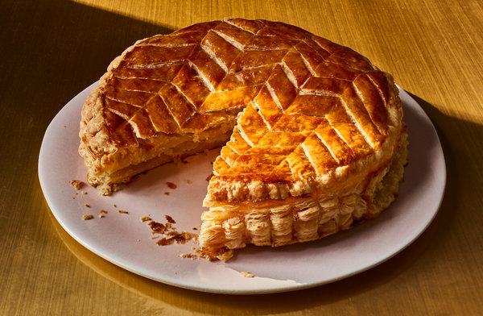

Galette des rois
 1
1 1 hour
1 hour Source
Source Sweet
Sweet

Preheat the oven at 200°C.
2 sheetspuff pastry180 mLpowdered sugar85 gsoftened butter100 galmond meal½ tspvanilla extract
Cream butter with sugar just until mixed. Add eggs one at a time, then mix in almond meal and vanilla. Cut out 2 round puff pastry sheets by using a lid or plate as mold. Add the stuffing to the center and spread until there’s about 1 inch margin.
2eggs
Brush the margin with egg whites to help the sheets stick. Fold the other sheet of pastry on top. Seal the edge by cutting in around every inch with a knife. Egg-wash and score patterns on top to decorate.
Bake 25 minutes, or until pastry is done.